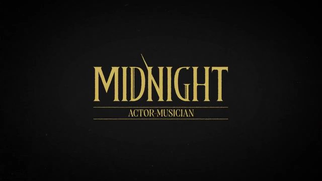
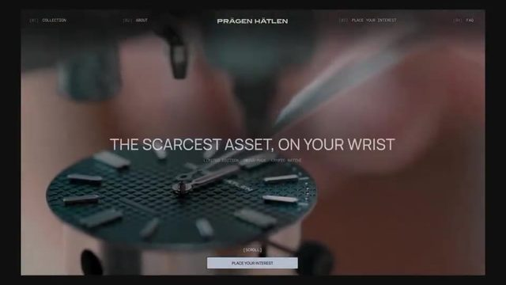
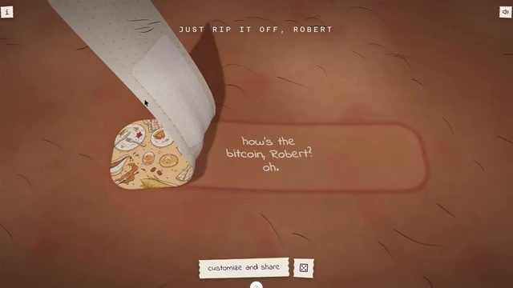

审美日报
2026-11-28 审美日报 今天周六，按轮换本该拆字体片头或自由位。当天能看到的片头里，Midnight 是个人项目的二维插画，Prägen Hätlen 的官方成片只有 8 秒快剪，所以改拆质感最好、也最好搬到讲解视频里的自由位：Trizz 为 TaylorMade 做的 32 秒产品片 It's a Beautiful Machine。看片工具已完整看完。值得学的是：先用特写滑过金属和刻字，不要急着给产品全貌；中间用一道电光蓝扫过杆面和背部结构；最后镜头定住，再出标题。国外信源扫过之后，合格新作 4 条，不够 10 条，不硬凑。点赞接口里，11-22 周精选的 activate card interaction 从「无」变成了踩，已写入「不喜欢」；今天没有新评论。
点封面在页面里播放（Vimeo / YouTube / X 需要代理；Vimeo 若没自动开始，再点一下播放键）。觉得好就点「喜欢」，有想法就写在下面的框里保存，我每天出日报前会读，存进偏好和审美库；会多找同类，但每天仍保持类型分散。
目录 01 It's a Beautiful Machine（TaylorMade SLDR Irons）02 Midnight: Actor-Musician Opening Titles03 Prägen Hätlen（Awwwards 11-27 当日最佳）04 Just rip it off（Thanksgiving 版）－ 看过但没选进今天日报拆 细拆：Trizz 的 32 秒 TaylorMade 产品片 It's a Beautiful Machine——先用特写滑过金属和刻字，再让光线扫过结构，最后定住出标题
01 3D质感 MG 字体版式
It's a Beautiful Machine（TaylorMade SLDR Irons）
Trizz（巴塞罗那；创意指导 Oriol Puig）× The Ebeling Group / Zambezi · Stash 2026-11-27 【看过视频】
32.0 秒成片，完整看过（看片工具）
字体未识别（粗一点的无衬线大写）
主色是黑底、金属银，电光蓝大约 #00B4FF，背部纹理扫到时偏紫蓝
前 10 秒有少量失焦的白点，像尘雾，不是爆发粒子
好在哪 32 秒产品片，看片工具完整看完。开头约 9 秒都是很暗的金属特写，边缘反光和一点点尘雾，先不告诉你这是什么。接着球杆整体慢慢转出来，旁边出现一颗球，一道电光蓝打在杆面上。镜头再贴着杆面横槽滑过去，扫过背面的 SLDR 刻字，再低头看蜂窝纹理和 TaylorMade 字样。0:25 起切到黑底上的产品定装，0:27 左边淡入 IT'S A BEAUTIFUL MACHINE.，随后补上 INTRODUCING SLDR irons 和标志，停约 3 秒后淡出到黑可借 讲一件硬件或工具，先不要给全貌。用特写滑过材质和刻字，中间只加一道色光提醒人看结构，最后把镜头定住再出一句标题。镜头之间都是硬切，大约每 3 到 4 秒一刀。下面有细拆
展开全文
02 片头片尾 字体版式 MG
Midnight: Actor-Musician Opening Titles
Sayok（@Sayok474044） · X 2026-11-27 【看过画面（抽帧）】

X ↗ 49.4 秒成片，抽帧看过 12 帧
字体未识别（时间地点是衬线白字；片尾是烫金装饰标题，副行 ACTOR-MUSICIAN 夹在两条细线中间）
好在哪 49 秒个人项目片头。黑底先出两行白字 SOVIET UNION / DECEMBER 31, 1937，然后是夜里的大楼、窗里的剪影和一辆停着的车，灯光只有暖黄。中间进到室内人物，再切到红底碎裂的转场，结尾一只钟指向午夜，烫金标题 MIDNIGHT / ACTOR-MUSICIAN 停住。颜色从头锁在黑、暖黄、红和金，标题出现以前几乎没有大字可借 片头可以先用一行时间和地点把人按住，中间用窗户和光把气氛立起来，最后再给标题。标题的颜色最好跟前面的灯光是同一路，不要另外再开一套色
展开全文
03 字体版式 转场 实拍剪辑
Prägen Hätlen（Awwwards 11-27 当日最佳）
Cher Ami（@FlyCherAmi） · Awwwards 当日最佳 2026-11-27 【看过画面（抽帧）】

X ↗ 7.8 秒官方快剪，抽帧看过 12 帧
字体未识别（品牌名是细无衬线，拉开字距；标题是较细的无衬线大写）
好在哪 8 秒站内快剪。先是淡蓝灰渐变上出现一只手表线稿，左边轻轻标出 PRÄGEN HÄTLEN。然后切到戴手套的手在表盘上点刻度，再切到一台浅绿色冲压机压表壳，画面正中叠出一句白字 THE SCARCEST ASSET. ON YOUR WRIST。上下导航和 PLACE YOUR INTEREST 按钮一直留着，实拍是浅景深，焦点在手上和机器上可借 讲一件做工很细的东西，先出线稿轮廓，再切到手和机器的特写，标题叠在实拍正中，不要一上来就摆产品全貌。字只留一句，界面别跟画面抢
展开全文
04 转场 代码动画 实物动画
Just rip it off（Thanksgiving 版）
Robert Borghesi（@dghez_） · X 2026-11-27 【看过画面（抽帧）】

X ↗ 40.9 秒节日皮肤成片，抽帧看过 12 帧；另看过 3.6 秒素色原版短视频
字体未识别（揭开后的字是手写体；顶栏是细无衬线大写）
好在哪 这是同一项目的感恩节皮肤，约 41 秒。胶布上印着火鸡餐盘，揭开后底下是手写句子。胶布会拉长、带着阴影，字是提前写在下一层皮肤上的，揭到哪就看到哪。页面顶上有一行小字 JUST RIP IT OFF, ROBERT。原版是素色胶布，这条节日皮肤把同一套揭开动作重复了好几次，便于看清拉力和阴影可借 要揭开一层看字，就真的做一层会拉长的膜，字写在下一层，揭到哪里字就露到哪里，别用淡入。和之前喜欢的撕包装纸是同一类手法，用 Three.js 或 Remotion 做一层带厚度和阴影的膜即可
展开全文
看过但没选进今天日报 Josiah Benjamin Etuk（@JoBenEtuk）、Adebisi Victor（@adebisi_design）/ GSAP · 15 秒站内快剪。环形缩略图和飞起来的照片墙铺得偏满，中间还有一层色散，不符合克制标准
Bluestone98 / Orpetron · Orpetron 颁奖录屏，SOTD 水印和角标盖满，不适合放进日报
Codrops（@LuisBizarro、@dghez_、@yakudoo、@theo_t、@luruke 等） · 八个实验拼在一起的合集，不是一件完整作品；其中绷带一条已单独收入
luruke / Codrops · 只有 3.1 秒，笔尖在横格纸上写出 Ciao from Codrops，质感干净，但看不出打字交互的完整过程，可学的编排太薄
Luis Bizarro（@LuisBizarro）/ Codrops · 只有 3.2 秒门开的过场，看不出十四个房间的完整节奏，也偏氛围实验
theo_t / Codrops · 3.2 秒蜂鸟转头再飞走，羽毛质感好，但更像一段模型展示，不好搬到讲解视频
gane0wav（@gane0wav） · 21 秒动态字体。红黑白大字叠得很满，还有故障和色散，不符合克制标准
60fps（@60fpsdesign） · 5.7 秒。画面里还留着调试字和组件名，是开发预览，不是完成的作品；内容也是 Claude 远程连接的产品演示
Luis Bizarro（@LuisBizarro） · 56 秒品牌猜谜小游戏，同一机位连摆十几个 logo 变形，更像技术演示不是完整作品
theo_t / Codrops · 3.2 秒蛇鳞特写，材质很细，但几乎看不到可搬的剪辑或包装手法
Luis Bizarro（@LuisBizarro）/ Codrops · 3.2 秒彩虹喷漆实验，片段太短，颜色偏炫，没有完整作品结构
D.A.D. / Orpetron · Orpetron 颁奖录屏，SOTD 水印和角标盖满，看不清站点本身的动效
Jungler（导演 Margherita Premuroso；代理 La Chose） · 35 秒手绘公益片，全片血红，饥饿题材过重，和要的克制商业感距离大，也不好搬到讲解视频
TED-Ed（撰稿 Shannon Odell） · 11 月 19 日发布，已超过 7 天；扁卡通风和昨天刚推的 TED-Ed 霉菌片同一路，色彩也偏浓
今日细拆 · 自由位（产品片）
32 秒：先别给产品全貌，让光线把金属和刻字扫一遍，最后再定住出标题 【看过视频】 今天周六，按轮换拆字体片头或自由位。当天的片头里，Midnight 是个人项目的二维插画，Prägen Hätlen 只有 8 秒站内快剪，所以改拆这条质感最好、也最好搬的自由位：Trizz（巴塞罗那，创意指导 Oriol Puig）为 TaylorMade 做的 32 秒产品片 It's a Beautiful Machine，看片工具完整看完。值得学的不是高尔夫本身，而是出场次序：前 9 秒只给金属边缘和反光，不报这是什么；中间用一道电光蓝带着镜头滑过杆面横槽、背面刻字和蜂窝纹理；最后切到黑底定装，标题才出现，停约 3 秒后淡出到黑。镜头之间都是硬切，没有擦除或叠化。
结构（32 秒） 0:00–0:05 很暗的金属特写。镜头贴着棱和缝滑过去，高光是窄窄的一条，旁边有少量失焦的白点，像尘雾。还看不出这是什么 0:05–0:06 切到更近的特写，出现刻字里的 DR 两个字母 0:06–0:09 切到稍远的侧面，球杆头在深色空间里慢慢转，背景有隐约的格子 0:09–0:13 杆头旁边出现一颗球。一道电光蓝打在杆面上，把这一面从暗里提亮 0:13–0:18 镜头贴着杆面的横槽横着滑过去，蓝光把槽里的纹理照得很清楚 0:18–0:21 切到背面，镜头滑过 SLDR 刻字 0:21–0:25 镜头低头看杆头内腔，蜂窝一样的重复纹理，蓝光扫过，TaylorMade 字样被照亮 0:25–0:27 硬切到黑底上的产品定装，杆头在右，不再运动 0:27–0:30 左边淡入 IT'S A BEAUTIFUL MACHINE.，随后补上 INTRODUCING SLDR irons 和 TaylorMade 标志，和右边的杆头左右摆平 0:30–0:32 整幅淡出到黑 节奏 开头和结尾都慢：前 9 秒只在认材质，最后 7 秒完全定住给出标题。中间 0:13 到 0:25 稍快，镜头连续滑过杆面、背面和内腔，大约每 3 到 4 秒切一刀。
有旁白跟着讲结构，但画面并不是跟着每句话硬切。真正换角度的时候，往往是要看一个新的局部：横槽、刻字、蜂窝纹理。数字和口号都留到最后才出现。
转场 主要镜头之间全部是硬切，没有擦除、叠化，也没有用一个元素把两刀接起来。
每一刀里面，靠一条扫过金属的光线把视线带走，这是镜头内部的「转场」。片头从黑里起来，片尾淡出到黑，只有这两处用了淡。
字、颜色和立体感 字体未识别。标题是粗一点的无衬线大写，字距较紧；下面的 INTRODUCING SLDR irons 明显更细、更小，和 TaylorMade 标志排在一块 主色是黑底和金属银。电光蓝大约 #00B4FF，扫到内腔纹理时会偏一点紫蓝。没有第二套装饰色 立体感来自很窄的侧光、抛光金属的高光，以及横槽、刻字、蜂窝这些凹进去的细节。蓝光不是一层彩膜，是打在结构上的光 前 10 秒的白点很少，而且是虚的，像棚里的尘雾，不是爆开的粒子 怎么复现，以及在鱼知道里怎么用 用 Remotion 或 Three.js 都能搭这个结构。先把产品放进全黑环境，只用一盏很窄的侧光擦过边缘。前几秒只给看不懂的局部，再切到全貌。中间加一道可以扫过表面的色光，让人看清沟槽或刻字。镜头用直线平移或轻轻推，不要环绕太久。
转场就用硬切，大约每 3 到 4 秒一刀。标题一定要等产品定住再出，左右分开放，停两三秒再淡出，不要一边还在转一边出字。
比如讲一个录音设备、键盘或手机「它其实是一台精密机器」：先用 2 到 3 秒特写滑过旋钮、接缝或刻字，中间给一道色光扫过内部结构，最后把机器定在画面右侧，左边只出一句标题。不要开头就摆产品全家福。
看 Vimeo ↗ Stash 报道 ↗
X（@60fpsdesign、@jh3yy、@codrops、@awwwards、@greensock、@motionimo、@orpetron、@dom_meszaros、@grgrdvrt、@dghez_、@ani_obsessive，以及 motion design / Three.js / kinetic typography / opening titles 关键词搜索）、Codrops、Awwwards、GSAP、Motionographer、Stash、Vimeo Staff Picks、Typewolf、It's Nice That、YouTube（Kurzgesagt、TED-Ed、Cleo Abram、Vox、Bloomberg、MKBHD、Johnny Harris、Wendover 等）